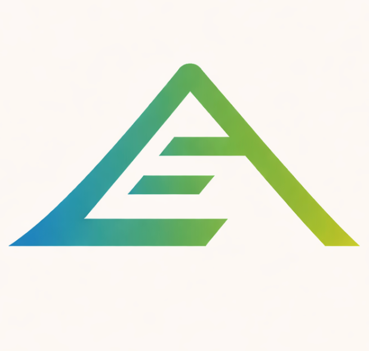

Find the places where founders, operators, or customer teams keep re-explaining the same business context.
Buying the best AI model isn't enough.
It needs to know how your business works.
Turn your team's scattered docs, chats, CRM notes, founder decisions, and workflow rules into AI-assisted execution systems.
The offer
AI Context-to-Execution Sprint
In 30 days, one messy growth or onboarding workflow becomes a documented, AI-assisted execution system with reusable context, instructions, review loops, and measurable output.
Built assets include a context map, source-of-truth folder, prompt/workflow library, decision log, human review queue, handoff SOP, and one live workflow.
30-day process
From scattered context to one shipped execution loop.
Pull docs, chats, CRM notes, founder decisions, examples, and workflow rules into a usable context map.
Turn that context into prompts, review criteria, handoff docs, and one human-reviewed AI-assisted workflow.
Run the workflow, measure acceptance and time saved, then leave the team with SOPs and next build paths.
Professional work
Context from startup, SaaS, growth, and AI workflow work.
Early startup operator
First reps in product context, startup execution, and turning loose problem statements into usable work.
Early AI adoption in content systems
Used AI to support content generation and repeatable production workflows inside an international live-events marketplace.
YC S22
AI product build lead
Chosen at 20 to lead five engineering interns at Peoplebox.ai, a YC-backed startup, and help build an AI product from scratch.

Sales, partner, and onboarding workflows
Built AI-assisted closing, affiliate enrichment, onboarding intelligence, and partner-page systems around founder-led SaaS work.
Pebble
Short-form content engine
Locked the brand kit, tone rules, and output rhythm into an AI content workflow capable of producing 20+ short-form pieces per week.
AI-assisted sales
Cut lead handling time by up to 80%.
Converted lead context, post context, comment behavior, and tone rules into human-reviewed DM drafts for faster closing work.
- Before
- 3 to 5 minutes per lead
- After
- About 1 minute per reviewed lead
- Receipt
- 56 personalized DMs sent in 12 minutes
Peoplebox.ai
Led five interns in a YC-backed AI build.
Ran team rhythm for a scratch-built AI product: goals, specs, agent loops, review lanes, QA context, and handoffs.
Selected at 20 to lead the build teamPartner enrichment
Moved top affiliates from export to relationship lane.
Audited a 614-affiliate Rewardful export, shortlisted the top 14, and built targeted outreach plus partner-page surfaces.
4 of 14 top affiliates moved into active 1:1 workPartner pages
Built dedicated sales surfaces for high-leverage partners.
Created tailored landing pages, comparison content, referral-link routing, and partner handoffs for priority routes.
Demandii / LinkedOtter / FluidCRM / Lars Kruger lanesActivation intelligence
Turned support friction into onboarding specs.
Mapped 30+ support conversations into email, Intercom tour, PostHog, and measurement specs for cleaner activation.
LinkedIn authentication identified as first wallAI content ops
Built a 20+ pieces/week short-form system.
Locked prompt rules, scene structure, voiceover stages, caption rules, QA loops, and creator handoff docs around a brand kit.
Tuned for repeatable viral-format outputPilot fit
Best for teams where AI output still needs re-explaining.
The strongest entry point is a founder, Head of Growth, RevOps, CS, or Ops lead at a 10-100 person B2B SaaS or service business.